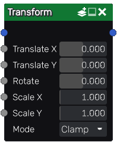

Transform node¶
The Transform node applies a scale operation, a rotation and a translation to the input image.
Inputs¶
The Transform node accepts a color image as input.
It also accepts a greyscale input image for each transform parameter. In that case, instead of applying a uniform transform to the input image, the transform parameter will, for each pixel, be multiplied by a value from -1 to 1 that depends linearly on the corresponding greyscale input image (a black pixel will multiply the parameter by -1, a white pixel will not change the parameter, a grey50 pixel will set it to 0).
Outputs¶
The Transform node outputs the transformed image.
The input image is first rotated around its center, then the scale operation is applied and finally the translation.
Using the scale operation to zoom on a detail of the input image is only recommended if the input does not rely on resolution dependant nodes.
Parameters¶
The Transform node has the following parameters:
Translate X and Translate Y define the translation.
Rotate define the rotation expressed in degrees.
Scale X and Scale Y define the scale operations along the X and Y axes.
If Repeat is checked, zooming out will repeat the image, otherwise it will be clamped.
Example images¶